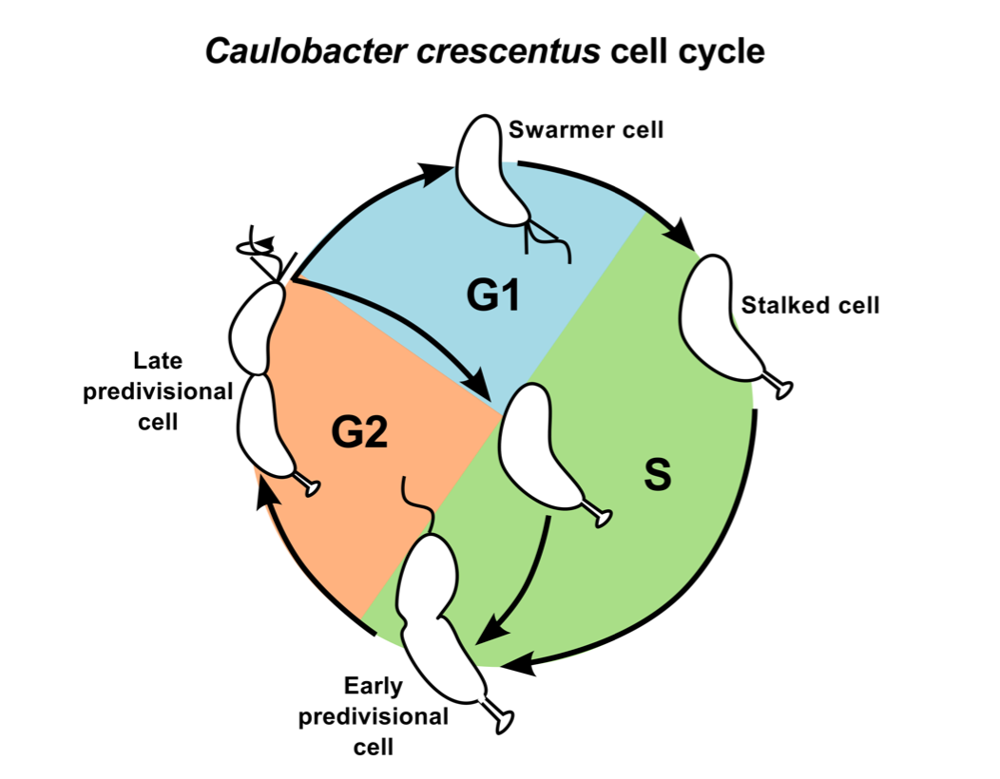

Caulobacter Crescentus
Caulobacter Crescentus is a free-living bacterium that resides in aquatic environments that can only offer very low level of nutrients. In order to survive on limited nutrients, it has evolved a dimorphic life cycle (Figure 1.1) [1]. Cell division gives rise to two structurally and functionally different daughters: an immobile but replication competent 'stalked cell' that remains anchored to some surfaces; and a mobile but quiescent (reversible state of a cell in which it does not divide but retains the ability to re-enter cell proliferation) 'swarmer cell' that can disperse in search of fresh nutrients. By separating the two daughters, the bacterial population within a geographic location may be maintained below the carrying capacity afforded by the low-nutrient environment. The swarmer stage of Caulobacter cell may also offer a competitive advantage by enabling the slow growing Caulobacter population to find new nutrient-rich regions before other microbial communities [2]. In response to nutritional cues in the environment, the swarmer cell will eject its flagellum, retract the pili and grow a stalk at the site where its motility apparatus used to be present. The morphological transitions are accompanied by exit from G1-phase and entry into S-phase of the cell cycle. Later, the stalked cell undergoes a second morphological transition, as it acquires a new flagellum at the opposite pole. At this predivisional stage, one half of the cell resembles the stalked cell while the other resembles the swarmer cell.

Figure 1.1: Life cycle of Caulobacter crescentus. The motile swarmer cell contains a flagellum and pili, and it cannot undergo DNA replication (G1 phase, blue region). The stalked cell remains attached to substratum by its stalk, and undergoes active DNA replication (S phase, green region). The predivisional cell is equipped with a stalk at one end and a flagellum/pili at the other. It is preparing for cell division (G2 phase, orange region).
The need for a computational model of Caulobacter cell Cycle regulatory network
Advances in microscopy combined with molecular biology techniques have revealed that macromolecules are localized in a non-homogeneous fashion in the cell cytoplasm, and that dynamic localization of proteins is critical for cell cycle progression and asymmetry. However, the molecular-level mechanisms that govern protein localization, and enable the cell to exploit subcellular localization towards orchestrating an asymmetric life cycle remain obscure. There are also instances of researchers using intuitive reasoning to develop very different verbal explanations of the same biological process. To provide a complementary view of the molecular mechanism controlling the asymmetric division cycle of Caulobacter, we have developed a mathematical model of the cell cycle regulatory network.
An advantage of a mathematical modeling approach is that it can be used to compare hypothetical models and establish which proposed hypothesis, if any, is better suited to explain the experimental observations. An in silico approach also allows modelers to decompose a large biochemical network into smaller sub-networks or 'modules', that can be modeled and analyzed independently. An end- point of a modeling study should also be to tease out underlying design principles that enable the cell to perform tasks in an efficient and robust fashion. A computational model that is successful in reproducing a majority of the experimental evidence can also be used to make predictions regarding the behavior of the control system under novel conditions. Hence, models can also be cross-validated by experimental tests of predictions made by the model.
Further information about the caulobacter can be found at https://en.wikipedia.org/wiki/Caulobacter_crescentus
Reference
- Poindexter JS (1981) The Caulobacters: ubiquitous unusual bacteria. Microbiol Rev 45: 123-179.
- Curtis PD, Brun Y V (2010) Getting in the Loop: Regulation of Development in Caulobacter crescentus. Microbiol Mol Biol Rev 74: 13-41.
 webmaster
webmaster